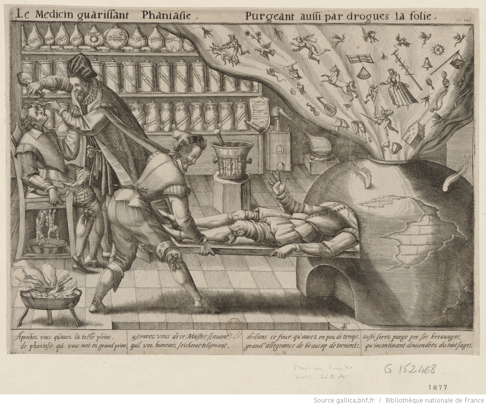

just don’t forget people pursued alchemy for 2500 years

Source: “Le Médecin guérissant Phantasie,” Mattheus Greuter, 1620 (Bibliothèque nationale de France).
When a result or an account turns out to be misleading, independent of how cautious a researcher is, how easy is it for someone else to push back logistically? Imagine two scenarios.
- a very smart and cautious syntactician thinks about certain examples, contexts, existing research, and comes to certain conclusions about his own grammar, how it relates to possible human grammar, and publishes that paper.
- a very cautious psycholinguist runs a lot of experiments and comes to certain conclusions given the statistical analysis and the method used that are widely accepted.
Now, assume that both of them were misled, even though they were as cautious as they can be. For the syntactician’s claim, what you need to do is think about the examples and form a better model of the facts. The skills required are serious, but the barrier to entry is essentially intellectual. For the experimental claim, though, there is a much steeper entrance fee. You need money to gather participants, and this problem becomes even worse when the original finding was an effect and you are arguing for a null, the needed participant number increases dramatically when you are trying to convince people that nothing is there. On top of all of this, you need an entire process with IRB, which is completely valid to exist. The intellectual expertise required for both paths is of course comparable, but the access is not.
What I feel, then, is that even when both subfields might contain a comparable amount of misleading information, it is logistically harder to engage with the experimental side.1 Right now, you can be like “Oh, this is going to be one of those posts how somebody says the system is just wrong.” or something like “Yeah, yeah we have to be more cauitous about statistics…”
Nope. I completely disagree. As much as I support keeping people more and more accountable for their experimental and analysis decisions or their data with open science and preregistration and so on, I do not think the threshold for ‘discussion’ should be even higher.
I think the answer lies in thinking about our relation with the alchemy. There were exciting and good stuff that we could have learn from alchemy, and there were other parts that was not as fun, and borderline unappealing. I argue we only got the unappealing parts from alchemy.
I think in these two aspects, psycholinguistics is very similar to alchemy. Alchemists had methods, they reported (not had) replicable results, and they had a shared framework for interpreting them. If you read the writings of Newton, who was argued to be not the first of ‘enlightenment’ but the last ‘alchemist,’ you will see that they were people who followed the existing traditions quite cautiously. They pursued that program for 2500 years before anyone realized the interpretations were wrong. And when you think about it, one can find some truths in what they perceived. Yes, maybe the ideas and the methods on how to make gold from feces were not correct. But the idea that things in the world shared a common core and with manipulating the necessary subelements of feces, it is possible to turn it into gold were correct.2 We can indeed manipulate the subelement level composition of things.
So, what led us to think alchemy is bogus? If you ask a commoner like me who does not know a lot of science history, what us commoners feel is that they were led to believe crazy ideas with no real evidence, or evidence that can be interpreted better. Moreover, they carried this fog of mysticism where their insights were not a direct consequence of the results they had.
But, these people were not uneducated or just loons. The problem to me looks like they were following the existing tradition of alchemy, which is to say, they were not aware of the limitations of their methods and the uncertainties of their results. Moreover, they were too sure of existing traditions. In a sense, they were not speculative enough. The history as of now which recorded the findings as the last alchemists as theories of the world reflects the alchemists who did speculate out of their known traditions.
Our tools are now better now, but I am not sure our situation is as different as we would like to think.
I think the key insight to gain from this is we should make being wrong and speculative okay again. If you look at the existing psycholinguistic papers today and the psycholinguistic papers of pre-90s, one thing that you will notice is that papers became more and more direct and less and less speculative. The arch of a paper turned from a perspective and commentary from what might be happening to what can be said without being wrong. I believe this in turn fed this line of ‘truth-y’ work where the evidence threshold is quite high and there is no place for speculation, that is not supported by significance testing or condition differences in mean, or more recentlyle probability of posterior distribution residing over 0.
However, it is important to understand that our models, how we interpret our data, our statistical model choices and how we write down our models is as well very speculative. One quote that I really like is from McElreath:
When the wind blows, branches sway. If you are human, you immediately interpret this statement as causal: The wind makes the branches move. But all we see is a statistical association. From the data alone, it could also be that the branches swaying makes the wind. That conclusion seems foolish, because you know trees do not sway their own branches.
Many models, probably for a good reason, assumes that we are in a better place model-wise and we can dissociate “wind->branch” from “branch->wind” with ‘good’ experiments and ‘cautious’ statistics. I find this optimistic and argue that we should reject the simplistic view that statistical significance is the only way to understand the world, and I hate the fact that experiments make people feel that they are in the safe waters. Again, do not misunderstand me: Experiments are necessary and quite often not misleading, our blind trust in them is misleading.
I think another reason people feel in they are in safe(r) waters is that they see experiments quite mechanical. I am an aspiring psycholinguist who loves deploying and running experiments. It surprises many people when I tell them that one of the most fun I have is when I plan, code, and employ experiments. Most people seem to treat this part as the tedious, mechanical step you just have to get through after the real thinking happened. Treating the experiments tedious and mechanical part of the research, I think, takes away the awareness what can go wrong with them, independent of how cautious you are. It also take away that many decisions you make during the experiment, even as small as instructions or questions, are subjective decisions that might change your results.
Let me give a concrete example to show what I mean. Consider the case of agreement attraction. For a long time, people thought that participants were illusioned into thinking sentences like The key to the cabinets are rusty are grammatical, but that they rarely assumed grammatical sentences to be ungrammatical, as in The key to the cabinets is rusty. The relevant effects like acceptability judgments or reading times supported such asymmetry for a long time.
That seemed like a clean, stable finding and repeated many many times. However, recently people showed that “ungrammaticality illusion”, namely deeming sentences ungrammatical while they are grammatical, does surface once you control either the people’s passive tendency to agree with what they are presented (Hammerly et al. 2019) or the type of task participants are expecting (Laurinavichyute and Von der Malsburg 2024). What looked like a fact about grammar processing turned out to be, at least in part, a fact about the task itself. On a separate but related front, many have shown that inferences drawn from widely used statistical models and experimental methodologies can be unwarranted – not because the researchers were careless, but because the statistical or experimental tools themselves were not doing what we thought they were doing (Vasishth 2023; Pankratz et al. 2021; Logacev and Bozkurt 2021, among others). I am pretty sure many people can find similar cautionary tales in their own research.
Now to be fair, I am not saying let’s get rid of experiments and just speculate. Of course not. I disagree with the stances that are extreme. I am sure that many people have heard something very strong like “it is no longer tenable for syntactic theories to be constructed on the evidence of a single person’s judgement” (Featherston). And of course more nuanced positions also exist. Colin Phillips rightly notes that “large-scale judgment studies are likely to be less of a panacea than we are sometimes led to believe,” while arguing how they are also very useful.
My concern is different: even when we do everything right, namely good design, enough power, proper statistics, we might still not understand what the experiment is actually measuring. Fifty years of experimental psycholinguistics is not that much, and the confidence along with a ‘truth-y’ narrative we have built up in that time might be running ahead of what our methods can actually support.
You might be saying, how being more speculative would help? I think being more speculative and allowing us to entertain ideas that are not necessarily supported by big experiments, would take away the ‘truth-y’ or ‘safe-waters’ feeling and instill more epistemic humility about what our experiments are telling us. What we require is not less experimentation, just less certainty that we understand what the results mean. It is also possible that I am horribly wrong about my speculations I say here. Just remember that Alchemy was a thing for more than 2500 years.